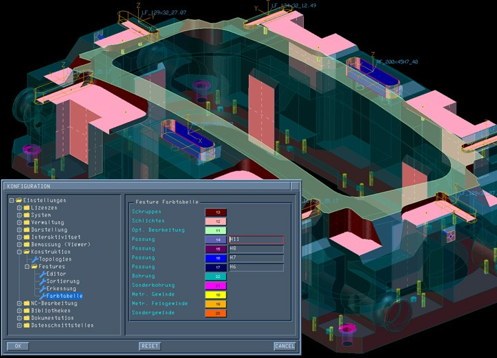

|
Otomatik delik delme ve frezelemeye yönelik yeni 2.5D CAM modülü Tebis Automill® teknolojisinin bilgi tabanlý yaklaþýmýna dayalýdýr. Göze çarpan özellikleri, unsur teknolojisi ve özellikle kalýp imalatçýlarýnýn gereksinimlerine uygun olarak tasarlanmýþ frezeleme fonksiyonlarýdýr.
Bir süreden beri Tebis yazýlým geliþtirme ekibi yeni 2.5D iþleme yetenekleri üzerinde çalýþmaktaydý. Tebis firmasýnýn standart süreçlerinden biri olarak bu çalýþmalar, kalýp imalat sektöründen müþteriler ile yoðun bir diyalog içerisinde gerçekleþtirildi. Sonuç ise otomatik delik delme ve frezeleme operasyonlarý için baþtan sona yeniden tasarlanmýþ bir 2.5D CAM modülü oldu. Yeni yetenekler slot ve dikdörtgen gibi ceplerin otomatik olarak algýlanmasýný ve geçmeler ile diþ çekilecek geometrilerin renk tablolarý kullanýlarak tanýmlanabilmesini saðlamaktadýr.
Önemli Deðiþiklikler/Yenilikler
Unsurlar
Tebis yazýlýmýna transfer edilen geometriler unsur tarayýcýsý tarafýndan deðerlendirilir, slot ve dikdörtgen geometrili ceplerde otomatik olarak tanýnýr. Diþ tipi ve tolerans gibi imalat özellikleri renkler ile belirtildiðinde bunlar otomatik olarak unsurlara atanýr. Bu bilgiler ilave iþlemlere gerek kalmaksýzýn doðrudan tezgaha aktarýlýr.

Standart Cep Ýþleme
Pah, dip ve köþe þekilleri, açý gibi geometrik özelliklere sahip dikdörtgen ve slot cepler için NC programlarý unsur desteði ile oluþturulabilir. Halen delik delme için kullanýlan MFEAT fonksiyonu artýk herhangi bir sayýdaki standart cebin otomatik ve kurallý olarak iþlenmesi için kullanýlabilir.
Kontur Ýþleme
Kontur iþleme fonksiyonu Z yönünde ilerlemeye ilave olarak yan adým ilerleme de saðlar. Entegre kalan stok hesaplamasý ile birlikte karmaþýk konturlarýn optimize edilmiþ bir takým sýrasý ile iþlenmesi mümkündür.
Delik Delme Fonksiyonlarý
Yeni derin delik delme yetenekleri RPM ve ilerleme hýzýnýn adým adým ayarlanabilmesini saðlar.
Düzlemsel Yüzeylerin Ýþlenmesi
Karmaþýk düzlemsel yüzeylerin iþlenmesinde tüm açýlar ve yüzey süreksizlikleri sistem tarafýndan deðerlendirilir, mevcut durum için optimum takým giriþ noktalarý ve yan adým hareketleri oluþturulur. Ýstenilen sayýdaki düzlemsel yüzeyin uygun bir takým ve strateji kombinasyonu ile ayný anda iþlenebilmesi olasýlýðý da büyük bir zaman avantajý saðlamaktadýr.
Stok Hesaplanmasý ve Takým Yolunun Ýyileþtirilmesi
Kullanýcý, tasarlanmýþ veya taranmýþ bir modeli ya da önceki bir NC hesaplamasýndan elde edilen geometriyi kullanarak kalan yerlerin iþlenmesini saðlayabilir. Tebis'in takým yolu radyuslama ve optimizasyon opsiyonlarý hýzlý, titreþimsiz ve yumuþak bir iþleme saðlar.
Manuel Takým Hareketleri
Kullanýcý düzlemsel yüzeylerin iþlenmesi için takýmý elle hareket ettirerek çarpma kontrolü yapýlmýþ takým yollarý oluþturabilir. Bu fonksiyon parçada zor ulaþýlan bölgelerin temizlenmesi için çok uygundur.
Karmaþýk Geometrili Ceplerin Ýþlenmesi
Bu yetenek ile konik açýlara sahip olanlar da dahil olmak üzere herhangi bir karmaþýklýktaki 3D cep geometrileri üzerinde otomatik NC programlama yapýlabilmesi mümkün olmaktadýr. Düzlemlerin otomatik olarak tanýnmasý çok adýmlý ceplerin iþlenebilmesini saðlar.
NC Komutlarý
Özel takýmlar için çevrimler, ilerleme hýzlarýnýn bölgesel ayarlanmasý ve tezgah operatörü için açýklamalarýn takým yoluna manuel olarak dahil edilmesi mümkündür. Bu yeni fonksiyon takým yoluna herhangi bir NC komutunun esnek bir þekilde entegre edilebilmesine yardýmcý olur.
Yüksek Otomasyon Potansiyeli
Yeni Tebis 2.5D modülü sunduðu benzersiz yetenekler ile 2.5D - lineer NC programlama alanýnda otomasyonu mümkün kýlmaktadýr. Tebis yazýlýmýnýn bara, cep, delik gibi imalat unsurlarýný tanýmasý ve NC takým yollarýnýn otomatik olarak oluþturulmasý operatör için çizim hazýrlanmasý iþini azaltmakta, NC programlama üniteleri programlama için kullanýlmayacaðýndan tezgah zamanýndan kazanç saðlamaktadýr. Ölçülerin operatör tarafýndan çizim üzerinden manuel olarak tezgah NC kontrol ünitesine girilmesi nedeni ile oluþan hatalar da önlenebilmektedir.
Ýrtibat:
 Redoks Mühendislik Bilgisayar Tic. Ltd. Þti. Redoks Mühendislik Bilgisayar Tic. Ltd. Þti.
Buttim Ýþ Merkezi C Blok Kat:4 No:1184,
Bursa
Tel: (224) 211 62 00
Kýsýklý Mah. Alemdað Cad. Yanyol Sok. Dumankaya Sitesi B Blok No:27/4
Üsküdar, Ýstanbul
Tel: (216) 521 53 85
www.redoks.com.tr |